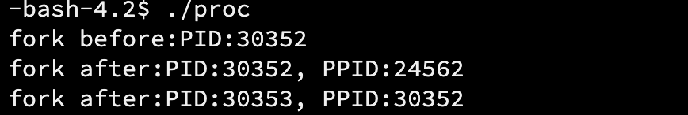
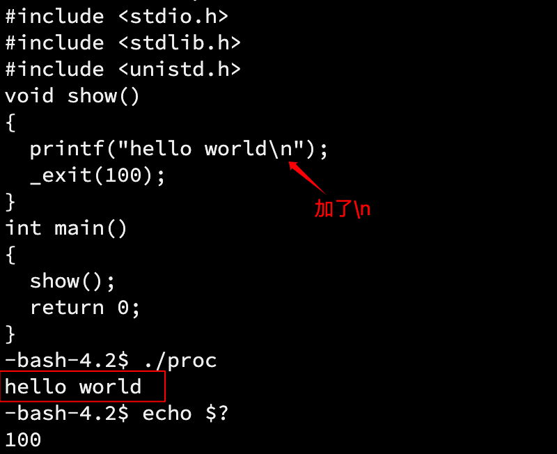
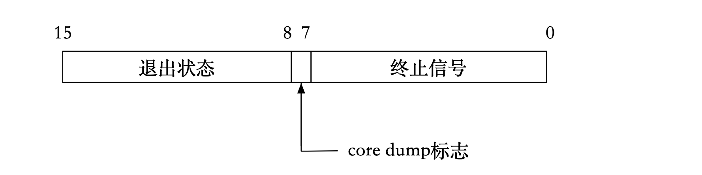
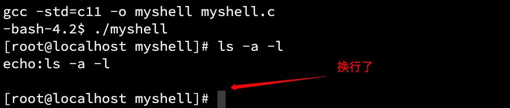

进程控制
1. 创建进程
1.1 认识 fork
在 进程概念 中已经说明 fork 函数的用法：在已有的进程中使用 fork 函数，会创建一个子进程，而父进程就是原进程。
fork 函数的位置就是一个分界点，fork 之前的代码由父进程执行，之后的代码分别由父子进程执行。
实际上，这里的父子进程共享所有代码，只是 fork 函数在语法上限制了子进程执行的语句范围，原因是 OS 会将 fork 的位置传给子进程，让子进程从这个位置开始执行。
进程调用 fork 函数，当控制转移到内核中的 fork 代码后，内核会做以下事情：
- 分配新的内存块和内核数据结构给子进程；
- 将父进程部分数据结构内容拷贝至子进程；
- 添加子进程到系统进程列表当中；
- fork 返回，开始调度器调度。
|
|
运行以上代码，查看 PID 和 PPID：
可以看到，fork 之前的代码只执行了一次，fork 之后的代码执行了两次。说明 fork 之后的代码父子进程都会执行。
fork 函数的返回值
给子进程返回 0；给父进程返回子进程的 PID，子进程创建失败则返回-1。
为什么给子进程返回 0，而对父进程返回子进程的 PID 呢？
首先要明确创建子进程的目的：指派任务给子进程执行。PID 对于进程而言就是一个名字，标识。父进程可以有多个子进程，子进程只有一个父进程，所以父进程必须知道子进程的标识。
为什么 fork 有两个返回值？
fork 之后的代码中，包括最后的 return 语句，由于 fork 之后的语句父子进程都要执行，return 语句也不例外。
1.2 写时拷贝
在任意一方未进行写入数据的操作时，父子进程是共享代码和数据的。只要当任意一方写入数据，这时才会拷贝一份，然后修改部分代码和数据，得到属于各自的代码和数据。
为什么不在创建子进程的一开始就进行数据拷贝、修改等操作？
- 为了按需分配内存，高效地使用内存空间。子进程不一定会使用父进程的所有数据和代码，而且子进程在不写入数据的情况下，也没有必要对数据进行拷贝、修改。
意义
分离父子进程，保证其独立性。写时拷贝本质是一种延时申请的技术，提高内存使用率。
1.3 fork 的常规用法
- 一个进程希望复制自己，使子进程同时执行不同的代码段。例如父进程等待客户端请求，生成子进程来处理请求；
- 一个进程要执行一个不同的程序。例如子进程从 fork 返回后，调用 exec 函数。
1.4 fork 调用失败的原因
-
系统中有太多的进程，内存空间不足，子进程创建失败；
-
实际用户的进程数超过了限制，子进程创建失败。
2. 进程终止
进程终止，本质就是 OS 释放系统资源，释放进程之前申请的相关内核数据结构和对于的数据和代码。
2.1 进程退出的情况
进程退出有三种情况：
-
代码执行完，结果正确；
-
代码执行完，结果不正确；
-
代码未执行完，程序崩溃。
对于前两种代码执行完的情况，OS 是怎么知道结果是正确还是错误？
- 在学习 C 语言的初期，我们就知道 main 函数是程序的入口，但是我们并没有理解它。实际上，每个程序都有一个 main 函数。那么 main 函数的返回值的意义就在于此，可以让 OS 知道程序运行后的情况如何，以便 OS 调度或提醒用户。
为什么 main 函数的 return 语句总是 return 0？它有什么含义吗？return 1、2、3 不行吗？
- main 函数的返回值是可以自己设置的，这个返回值叫做「退出码」，程序员或 OS 以退出码判断运行结果是否正确。return 语句的意义就是返回给上一级进程，以批判该进程执行结果（可以忽略）。
- 非零值有无数个，不同的非零值就可以表示不同的错误原因。返回值（退出码）可以有不同的结果，方便定位错误原因。
使用指令echo $?查看上一个进程的退出码：

对于程序员，我们只看返回码是无法知道是什么错误的，所以每个返回码都有对应的错误表。就像 ls 指令打印出的错误一样（后面的选项是随便打的）。
实际上，退出码都是有映射到各种不同的字符串的，这些字符串就像上面 ls 的报错一样。
通过 strerror 函数可以获取错误码和错误信息字符串的映射关系：
|
|

可以看到，上面 ls 的错误就是退出码为 2 映射的字符串。
退出码映射的字符串都有不同的含义，帮助程序员定位执行失败的原因，这是 C 语言中的退出码和字符串的映射关系，映射关系是人为规定的，不同情况下会有不同的含义。
2.2 进程退出的方法
正常退出：
- main 函数中的 return 语句；
- 在任何地方调用 exit 函数；
- 在任何地方调用_exit 函数。
return 代表函数调用结束，exit 是一个接口。
异常退出：
- ctrl + c，信号终止。
return 语句退出
上面演示过，return 后可以自定义退出码，通过echo $?指令可以查看验证。
exit 函数退出
|
|

在这段代码中，exit 会在进程终止前将缓冲区中的数据刷新出来。
_exit 函数退出
同样是上面的代码，将 exit 换成_exit，注意包含头文件<unistd>：
|
|

但是如果在打印语句中加上换行符呢：
结果却可以打印，为什么？
三者的区别
- return：只有 main 函数中的 return 语句才能让进程退出，其他函数中的 return 语句不能；exit 和_exit 函数在任何地方都可以让进程退出。
- exit 函数在退出进程前，会执行用户定义的清理函数，冲刷缓冲，关闭流等操作，然后才终止进程；而_exit 直接终止进程，不会做任何收尾操作。
- exit 是一个函数，而_exit 是一个系统调用。
「系统调用」，是 system calls 的直译，可以简单地理解为 OS 提供给上层的接口，是系统级别的函数。
重新回看那个、n 的问题，因为 exit 会冲刷缓冲，所以就算不加、n 最后也会打印出来，而没有收尾操作的、_exit，就没办法打印。这就说明「缓冲区」一定不在 OS 内部，而是 C 标准库为我们维护的。如果是 OS 维护，_exit 也可以将缓冲区中的内容刷新出来。
三者的联系
事实上，main 函数中的 return 语句会隐式地调用 exit 函数。
而 exit 函数在执行完毕收尾操作后，会调用_exit 函数终止进程。
也就是说，_exit 是最底层的函数，其他两个函数都是由封装而来的。
3. 进程等待
3.1 原因
进程等待是对于父进程而言的，也就是说等待的进程是子进程。
- 如果子进程退出，父进程不回收，那么子进程会变成僵尸进程；
- 僵尸进程是无法用
kill -9指令杀死的； - 父进程创建子进程，其目的是让子进程工作，如果父进程对子进程不管不顾，这就违背了创建子进程的初衷；
- 父进程需要通过进程等待，回收子进程的资源，获取子进程的退出信息。
3.2 子进程 status 参数
进程的 status 参数是一个 int 类型参数，但是它的不同范围的比特位储存着不同的信息（此处只研究低 16 位）。
在 status 的低 16 比特位当中，高 8 位表示进程的退出状态，即退出码。进程若是被信号所杀，则低 7 位表示终止信号，第 8 位比特位是 core dump 标志。

在头文件<sys/wait.h>中，提供了一些宏简化位运算操作：
|
|
其中，我们需要了解两个宏：
- WIFEXITED(status)：如果进程正常退出，返回的值是非零值。作用是用值的真假判断进程是否正常退出；
- WEXITSTATUS(status)：如果 WIFEXITED 非零，得到的是进程的退出码。
这里的 status 参数是针对进程正常退出而言的，如果进程因为崩溃（或其他不正常的方式）退出，这里的参数也是没有意义的。对于 return 语句，如果进程在它之前因为崩溃而退出，那么 return 的退出码也就没有意义了，因为根本没有执行 return 语句。
程序异常退出或崩溃，本质上是 OS 杀掉了进程，这和语言是无关的。OS 如何杀掉进程？–发送信号。
3.3 进程等待的方法
wait 函数
函数声明和头文件
|
|
参数
指向 status 参数的指针，如果不需要监视，设置为 NULL。
返回值
- 成功：返回进程 PID；
- 失败：返回-1。
作用
等待任意子进程。
下面用 fork 创建一个子进程，然后让子进程工作一段时间，在这段时间中，使用 wait 函数让父进程等待子进程结束。子进程结束以后父进程读取子进程的信息，然后打印子进程的 status 参数。
|
|
在进程运行时，在另一个终端用下面的脚本监控系统进程的情况：
|
|
从监控结果可以看到，子进程结束以后被父进程回收，不会变成僵尸进程。
waitpid 函数
函数声明和头文件
|
|
参数
- pid：待等待的子进程的 PID。如果为-1，表示等待任意子进程；
- status：同上；
- options：
WNOHANG，如果等待的子进程未结束，则 waitpid 函数的返回值为 0，不再等待；如果正常结束，则返回子进程的 PID；WUNTRACED，如果子进程进入暂停执行情况则马上返回，但结束状态不予以理会。
options 的不同选项，实际上是 C 语言中的宏。为什么是 C 语言？原因：Linux 内核是由 C 语言写的，而 wait 和 waitpid 是系统调用，也就是内核对外开放的接口，也就是 C 语言函数。
宏的作用是将抽象的数据赋予意义。
返回值
- 等待成功则返回等待进程的 PID；
- 如果设置了选项
WNOHANG，而调用中 waitpid 函数如果判断没有已退出的子进程的信息，返回 0； - 如果出错，返回-1，errno 会被设置成相应的值以指示错误所在。
作用
- 等待指定 PID 进程或任意进程。
wait 和 waitpid 的区别
效果不同:
wait 会令调用者阻塞，直至某个子进程终止。
waitpid 可以设置一个选项（options）设置为非阻塞，另外 waitpid 并不是等待第一个进程结束而是等待 PID 指定的进程。
waitpid 有 wait 没有的三个特性：
- waitpid 使我们可以等待指定的进程；
- waitpid 提供了一个无阻塞的 wait；
- waitpid 支持工作控制。
wait 和 waitpid 作为系统调用，它的执行者是 OS，本质上就是 OS 帮我们拿到进程的信息（task_struct）。
父进程不等待子进程，会造成僵尸进程，这是系统层面上的内存泄漏，跟我们 new 或 malloc 出来的内存空间造成的内存泄漏是不一样的。
通过 status 参数，父进程可以知道子进程的状态。
阻塞等待和非阻塞等待
阻塞等待
使用 wait 会令调用者阻塞。被阻塞的进程对于系统而言，无非两种情况：一是等待被调度，也就是这个进程没有被 CPU 调度（CPU 本来就很忙）；二是在阻塞队列中。
非阻塞等待
父进程通过 waitpid 等待子进程，如果子进程没有退出，waitpid 直接返回。
阻塞和唤醒
一般进程阻塞，伴随着被切换的操作，也就是如果进程不运行了，OS 将它的 PCB 放到排队队列中，在用户层面看来，就好像卡住了一样。将 PCB 放到运行队列中，就是进程运行起来了。
阻塞调用和非阻塞调用
调用的主体是父进程，被调用的是 wait 和 waitpid 函数。
- 阻塞调用：父进程一直等待子进程结束；
- 非阻塞调用：父进程会每隔一段时间后查询子进程是否结束，在这些间隔内，父进程可以做自己的事情。
示例
4. 进程程序替换
4.1 替换原理
fork 之后，父子进程各自执行父进程代码的一部分，这一部分对于用户而言是重复的，而创建子进程的初衷就是让它去干父进程之外的事情（这一点在接触『进程』后已经提到过不止一次）。虽然可以通过写时拷贝让父子进程拥有属于它们各自的数据，但是代码依然是共享的，也就是说，它们虽然数据不同，但是执行的任务还是一样的。
**进程程序替换就是让子进程通过特定的接口（exec 函数），加载磁盘上的一个全新的程序（代码和数据），加载到调用进程的进程地址空间中。**子进程执行不同的程序，叫做替换。
当执行进程替换操作后，子进程的代码和数据被新程序的代码和数据替换，并从新程序开始执行。
子进程进行进程替换，有没有创建一个新的子进程？
- 没有。进程=内核数据结构（PCB）+代码+数据，因为内核数据结构没有发生改变，所以没有创建新的进程。
子进程进行进程替换后，会影响父进程的代码和数据吗？
- 不会。进程替换，实质上是对子进程的数据进行写入操作。一旦父子进程的任何一方发生数据写入操作，写时拷贝技术就会发挥作用，为写入数据的一方另外创建一份代码和数据。所以父子进程的代码和数据是分离的。
子进程进行程序替换后，环境变量相关数据会被替换吗？
- 不会。因为每个进程都有自己的环境变量。环境变量以进程为单位，子进程继承父进程的环境变量。关于环境变量，可以参看这篇文章：环境变量的来源、原理与应用。
4.2 exec 函数族
exec 函数族提供了一个在进程中启动另一个程序执行的方法。它可以根据指定的文件名或目录名找到可执行文件，并用它来取代原调用进程的数据段、代码段和堆栈段，在执行完之后，原调用进程的内容除了进程号外，其他全部被新的进程替换了。
头文件
|
|
函数原型
|
|
参数说明
- path：要执行的程序路径。可以是绝对路径或者是相对路径。在 execv、execve、execl 和 execle 这 4 个函数中，使用带路径名的文件名作为参数；
- file：要执行的程序名称。如果该参数中包含“/”字符，则视为路径名直接执行；否则视为单独的文件名，系统将根据 PATH 环境变量指定的路径顺序搜索指定的文件；
- argv：命令行参数的数组；
- envp：带有该参数的 exec 函数可以在调用时指定一个环境变量数组。其他不带该参数的 exec 函数则使用调用进程的环境变量；
- arg：程序的第 0 个参数，即程序名自身。相当于 argv[O]。
- …：命令行参数列表。调用相应程序时有多少 命令行参数，就需要有多少个输入参数项。注意：在使用此类函数时，在所有命令行参数的最后应该增加一个空的参数项 (NULL)，表明命令行参数结束。
这些参数类型都是字符指针类型，说明这些参数都是以字符串的形式传入的。
返回值
- 一 1 表明调用 exec 失败，无返回表明调用成功。即 exec 函数有返回值则表明调用程序失败。
4.3 exec 函数用例
execl
|
|
execl 中的 l，可以看作 list 的缩写。
使用 execl 函数进行进程替换操作：
- 第一个参数是要替换的程序的路径，需要包括程序名。下面用常用的 ls 程序为例，所以先用 which 指令查看它所在的路径：

- 第二个参数实际上也是有顺序的：第一个参数是程序名，中间的是选项，以字符串形式传入，最后以 NULL 结尾。也就是在命令行是怎么写的，这里就怎么传，下面的示例也是一样的。
|
|
可以看到 execl 函数确实成功在这个路径下调用成功了 ls 程序，但是 execl 后面的打印语句没有执行。
原因是：一旦 exec 函数调用成功，即进程替换成功后，所有的数据都被替换了，包括 exec 前面的语句、return 语句等。之所以第一个打印语句能执行，是因为它在 exec 函数前面。
为什么 execl 成功没有返回值，只有失败了才返回呢？
- 替换成功了，所有数据都被替换了。即使 return 返回，也没有地方可以接收，因为替换以后新进程和原来的进程两者无关。
为什么创建子进程？或者说为什么让子进程去进行进程替换操作？
- 为了不影响父进程，保证父进程工作的付利息。父进程的主要任务是读取数据、解析数据、指派进程执行代码等工作，如果替换父进程，那么就没有进程可以管理数据了。
execv
|
|
execv 中的 v，可以认为是 vector，和第二个参数 argv 对应，表示字符串参数是存在一个数组中，以数组的形式传入的。
它和 execl 功能上没有什么区别，只是传参方式不同。
下面把参数放到数组中，然后将数组作为参数传入 execv：
|
|
把字符串强转为 char*，只是为了取消警告（类型匹配）。

execlp
|
|
结合环境变量部分，如果想要让程序直接执行而不指定它的路径，就需要将这个路径添加到环境变量 PATH 中。
execlp 中的 p 和环境变量 PATH 对应。
- 第一个参数是要找的程序名；
- 后面的参数是命令行参数。
功能
从环境变量中查找程序，找到然后执行。
也就是说，execlp 可以直接调用环境变量中的程序，而不用传入路径。
|
|
效果同上。当然，如果要用它执行自己写的程序，就要将这个程序的路径添加到环境变量 PATH 中。
实际上，传入的命令行参数（字符串选项），是由被调用程序中的 main 函数的一个参数接收的。
main 函数原型
int main(int argc, char* argv[], char* envp[])
execle
|
|
execle 中的 e 和 environment variables（环境变量）对应，所以不带 p 的接口就要带上路径。
上面的示例都是调用系统程序比如 ls，如何调用自己写的 C/C++程序呢？
- 其实就是设置命令行参数之间的对应关系。
下面写一个名为 mycmd 的程序，然后用 proc2 的子进程调用它：
|
|
|
|
可以看到，proc2 的子进程成功调用了自己写的 mycmd 程序。
【注意】
-
第一个参数是被调用的程序的路径，相对路径或绝对路径都可以，但是要保证使用相对路径时被调用程序要在当前进程的路径下。
-
后面的参数是命令行参数。
上面只用了两个参数，也可以传入环境变量 envp[]，它是一个指针数组。
在 proc2.c 的 main 函数中定义一个指针数组作为要传入的环境变量：
|
|
在 mycmd.c 中，增加查看环境变量的打印语句：
|
|
编译运行 proc2
结果表明，proc2 的环境变量传给了 mycmd。
补充
这就是环境变量具有全局属性，可以被子进程继承的原因。实际上，在子进程内部调用 execle 函数时，传入 main 函数接收的环境变量 env 就可以让子进程继承父进程的环境变量。

将 mycmd.c 的 getenv 函数的参数改成"PATH"：
编译运行 proc2：
这就是 main 函数接收的系统环境变量 PATH。
execve
|
|
这是一个系统调用，是 OS 提供的接口。实际上 exec 函数族都是用它封装的函数。原因是封装不同功能的函数以满足上层不同的需要。
小结
命名
- l(list)：表示参数采用列表的形式，一一列出。
- v(vector)：表示参数采用数组的形式。
- p(path)：表示能自动搜索环境变量 PATH，进行程序查找。
- e(env)：表示可以传入自己设置的环境变量。
| 函数名 | 参数格式 | 是否带路径 | 是否使用当前环境变量 |
|---|---|---|---|
| execl | 列表 | 否 | 是 |
| execlp | 列表 | 是 | 是 |
| execle | 列表 | 否 | 否，需自己组装环境变量 |
| execv | 数组 | 否 | 是 |
| execvp | 数组 | 是 | 是 |
| execve | 数组 | 否 | 否，需自己组装环境变量 |

5. 自制简易 shell
通过了解进程程序替换的原理后，介绍 shell 的运行原理。
5.1 shell 运行原理
通过子进程执行命令，父进程完成等待子进程、解析命令等管理操作即可完成命令行解释器（shell）的工作。
外壳程序（shell）就像银行的指导人员，OS 相当于银行内部，命令行解释器（shell）对用户输入到终端的命令进行解析，调用对应的执行程序。（回忆我们使用命令行输入命令时，shell 做的工作）
5.2 模拟实现
-
首先要明确，shell 一定是一个常驻内存的进程（不主动退出），也就是死循环。
-
打印出提示信息；
-
获取用户从键盘键入的信息（指令和选项）；
-
解析命令行参数；
-
fork 创建子进程；
-
TODO，内置命令；（在最后）
-
替换子进程；
-
等待子进程退出。
既然是常驻内存的进程，那么下面的操作都是在死循环内进行的。如果想退出这个自制 shell，可以按 ctrl+c；如果是死循环（打印），连续按几次就可以停下了。
打印提示信息
每次输入命令之前，都有这样的提示信息（具体视连接工具和平台而异）：
可以通过打印事先写好的字符串达到这种效果：
|
|
这样符号和字符串的组合就是打印给用户看的信息。除此之外，需要注意一些细节：
-
shell 并没有在打印提示信息以后换行，但是不加
\n的话，这个字符串会滞留在缓冲区中，所以打印提示信息需要搭配 fflush 使用，参数是stdout（标准输出），将字符串刷新到显示器上。1 2 3 4 5while(1) { printf("[root@localhost myshell]# ");//随便写的 fflush(stdout); }还增加需要下面的部件，否则这只是一个死循环打印。
获取键入的信息
自己写一个缓冲区
用一个全局的数组储存命令行参数。因为我们输入命令行参数的形式是一个字符串，就像这样："ls -a -l"，所以这个字符数组存储的是字符串。为了等下方便完整且刚好地截取输入的字符串，在初始化这个数组的时候就将所有元素置为\0。
|
|
写好缓冲区后，用 gets 函数获取输入的字符串，stdin 表示从标准输入中读取数据：
|
|
测试一下，输入"ls -a -l"，回车：
但是回显指令后，会多空一行，原因是：
注意刚刚输入一个字符串后，又按下了「回车」，这就导致缓冲区 cmd_line 的内容变成这样了：ls -a -l \n\0\0\0...，这就导致刚刚按下的回车输入到了缓冲区，所以要把这个\n去掉。换句话说，我们删除一个尾端的数据，通常将这个元素移除“尾端”的范围内，而\0就是字符串尾端的标志。所以我们对缓冲区读取的字符串做修改，将最后的\n置成\0。
|
|
测试一下：
现在有模有样的，就差解析命令和程序替换（就是让子进程调用命令的程序）了。
解析命令
还记得上面的 exec 函数族吗？给它们传入的命令参数是一个数组，这个数组的元素是命令或选项，就像这样：“ls”，"-a"，"-l"。但是我们知道，输入的命令行参数是一个字符串，为了使用这个接口，我们需要将这个字符串拆分成若干个命令和选项的小字符串，并且把它们存到一个数组里面，最后传入这个数组到 exec 函数（至于选哪个，等下再说）中。
|
|
strtok 函数是用来分解字符串的，其原型是： char *strtok(char str[], const char *delim); 其中 str 是要分解的字符串，delim 是字符串中用来分解的字符，该函数返回分解后的字符串的起始位置指针。
【测试】用一个循环检查一下字符串是否被拆成功了（等下要删掉）：
|
|

删掉它，继续。解析命令行参数的操作完成了，下面就是创建子进程和用子进程调用指定程序了。
创建子进程
用 fork 创建子进程已经轻车熟路：
|
|
替换子进程（子进程）
这部分的操作的主体是子进程。
个人觉得这个操作叫「进程替换」有点不准确，因为它本质上是让子进程去调用、运行其他程序，「替换」体现在当子进程调用其他程序时，子进程的所有数据都会被这个新的程序代替，实行这个操作以后，才是真正地称为进程替换。
那么使用哪个 exec 函数来进行进程替换？
- 根据需要选择。例如我等下要用 ls 示例，因为 ls 是系统程序，它是在环境变量 PATH 中的，那么可以选择 execvp 函数，因为第一个参数是 file（看最开始的参数说明），默认在环境变量 PATH 中搜索名为 file 的程序。
|
|
等待子进程退出（父进程）
这部分的操作的主体是父进程。
在前面「进程等待」部分提到，父进程传入一个 status 变量给子进程，通过这个 status 参数的低 16 比特位知晓子进程的状态。
- 成功：返回进程 PID；
- 失败：返回-1 或 0。
|
|
5.3 测试及补充
测试
编译运行以下代码：
|
|

补充
但是如果试图使用 cd 指令回退到上级目录呢？
上面的程序对 cd 指令是无效的。
【原因】
首先我们要知道，可执行程序（就是编译后的文件）和进程所在的目录是不一样的，可以看 这里 了解。
其次我们还要知道，当该命令（cd）执行时，不会为前往另一个目录而创建一个新的进程，而是由外壳代为执行这条命令，ls 等其他命令也是这种情况，这些命令叫做「内置指令」。这是因为，创建新的进程时，子进程会继承父进程创建时的目录。而如果 cd 命令继承了父进程的目录，则它永远也不能达到它的目标。
因为我们上面的操作对于命令行参数（我们输入的命令）而言，都是子进程执行的，子进程的几乎所有数据都会被替换，那么子进程调用 cd 程序，对于 shell 本身（父进程）是没有影响的。
【解决】
让父进程调用 cd 指令。
在真正的 shell 程序中，这些内置指令都是要由父进程执行的。
在 fork 后的父进程代码中，使用接口 chdir，切换工作目录，切换成功就重新循环。添加下面的代码：
|
|
当然可以把“子进程开始运行”和“退出码”这两个语句删掉，让它更像 shell。
【优化】
可以特殊招待以下 ls 指令，比如像真正的 shell 上个色？给 ls -l 起个别名 ll？
|
|

come on，有内味了。
有一个细节，我的代码中没有过滤 fork 失败的判断分支，因为篇幅有限且一般情况下不会失败。
5.4 小结
运用所学的知识，通过解决各种问题，能更深层次地理解我们平常使用的指令，又理解了一点点“一切皆文件”的 Linux 了。感觉黑乎乎的 shell 也不再那么神秘，只要抽丝剥茧，高楼大厦也是砂砾筑之。
模拟实现 shell 的源代码 在这里。